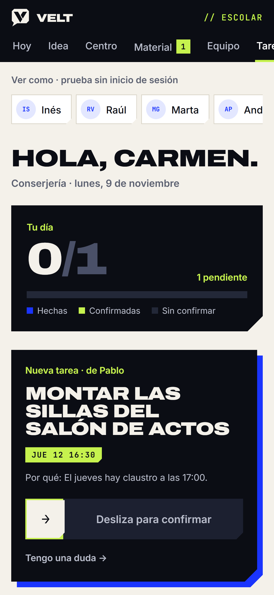
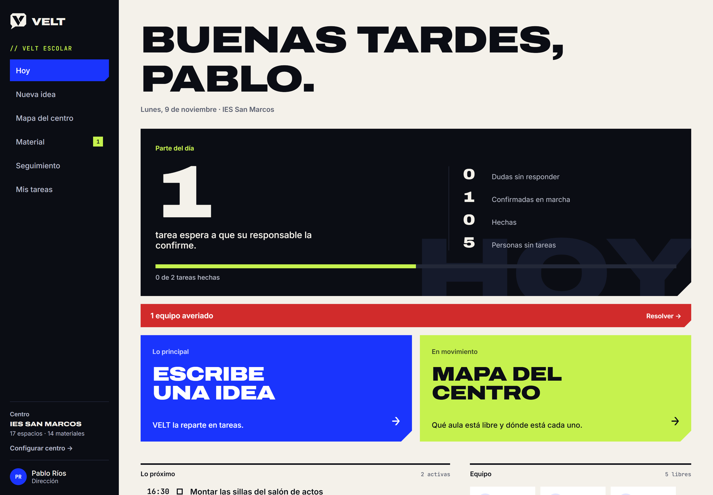
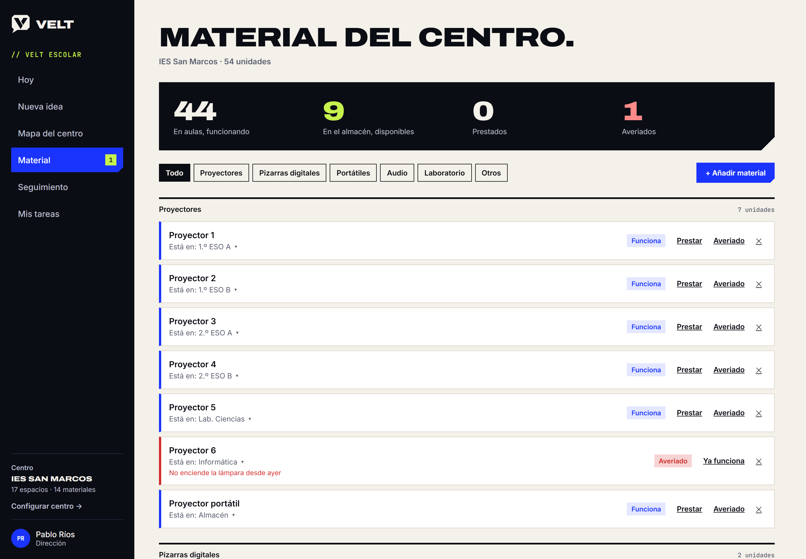
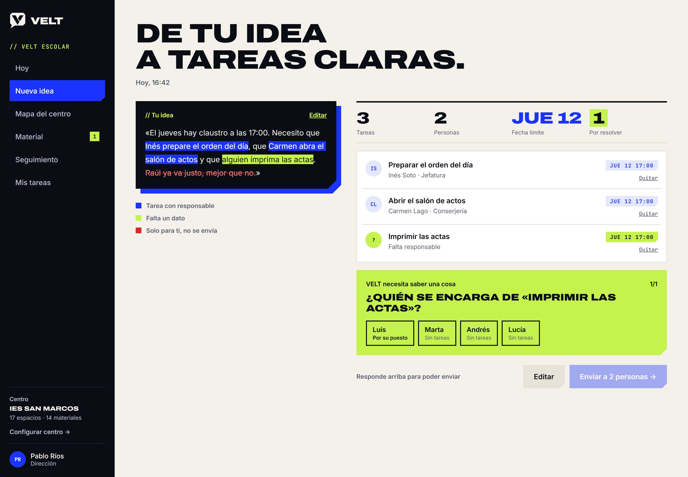
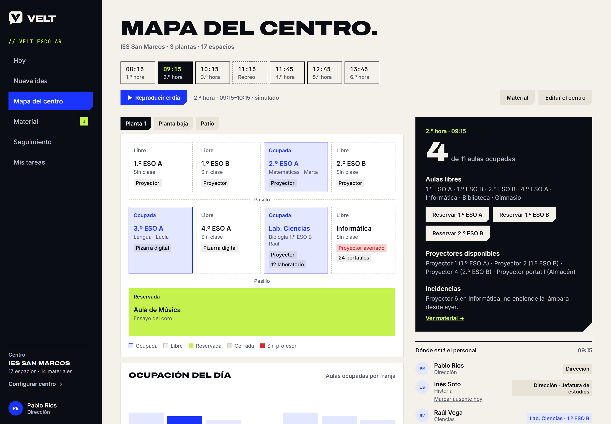

Tu centro, coordinado cada mañana.
Dirección escribe una idea y VELT la convierte en tareas con responsable y hora, cubre las guardias y te dice qué aula está libre. El profesorado solo tiene que confirmar.
Funciona en el navegador y en el móvil. Sin instalar nada.

Las mañanas no se organizan en un grupo de WhatsApp.
Una ausencia a primera hora, un proyector que no enciende, un claustro que preparar. Hoy todo eso vive en mensajes sueltos y en la cabeza de jefatura. VELT lo pone en un solo sitio y le pone nombre y hora.


De una idea a tareas claras.
Escribe como hablas
«Necesito que Inés prepare el orden del día y que alguien imprima las actas». Sin formularios.
Solo pregunta lo que falta
Si no dices quién, VELT propone a la persona con menos carga o a quien le toca por su puesto.
Reuniones para repartirlo
Cada persona recibe solo lo suyo, con el porqué, y lo confirma deslizando en su móvil.

Qué aula está libre ahora.
El mapa del centro se mueve con el horario: quién está en cada aula, quién está de guardia y qué material hay en cada sitio.
- Ausencias: marcas a alguien y ves sus clases sin cubrir.
- Guardias: VELT propone quién está libre y se lo envía.
- Material: proyectores, portátiles y averías, con aviso a conserjería.

«Antes la primera hora era apagar fuegos. Ahora a las 8:20 ya sé qué clases están sin cubrir y quién va a cada una.»
Séneca es el registro. VELT es el día a día.
No sustituye a Séneca ni a PASEN, y no guarda datos de alumnos. Es la capa de coordinación del equipo: dirección, profesorado, conserjería y secretaría.
Pruébalo un trimestre en tu centro.
Configuramos contigo las plantas, el horario y el personal en una tarde. Si al final del trimestre no os ahorra tiempo, lo dejáis.
Pedir un piloto